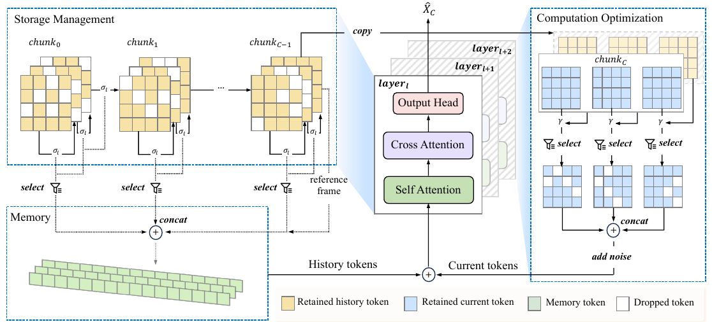

A video codec never resends the whole picture. It keeps one full keyframe, sends only the parts that moved, and refreshes the still parts now and then so they don't go stale. DASA runs the generator the same way: the last frame is the keyframe, moving tokens get full work, and the background is copied forward.
비디오 코덱은 매 프레임 화면 전체를 다시 보내지 않는다. 온전한 키프레임 하나를 두고, 움직인 부분만 보내며, 멈춘 부분은 낡지 않도록 가끔 새로 고친다. DASA는 생성기를 똑같이 돌린다. 마지막 프레임이 키프레임이고, 움직이는 토큰만 제대로 계산하며, 배경은 앞에서 그대로 가져온다.
How it works: a sparse memory and a skip list작동 방식은 성긴 메모리와 건너뛰기 목록
One similarity test decides what the cache keeps; a second decides which current tokens finish early. Both read the content itself, not attention maps.
유사도 검사 하나가 캐시에 무엇을 남길지 정하고, 또 하나가 현재 청크의 어느 토큰을 일찍 끝낼지 정한다. 둘 다 어텐션 지도가 아니라 영상 내용 자체를 읽는다.

- Prune the memory.메모리 정리.A token is cached only if its cosine similarity to the next frame is below σ, which falls from 0.8 to 0.2 with depth. A position skipped 4 frames in a row is forced back in.다음 프레임과의 코사인 유사도가 σ보다 낮을 때만 캐시에 남긴다. σ는 층이 깊어질수록 0.8에서 0.2로 낮아진다. 4프레임 연속 빠진 위치는 강제로 다시 넣는다.
- Skip still tokens.멈춘 토큰 건너뛰기.After the first of 4 denoising steps, each token searches a 3×3 window of the previous chunk; at similarity 0.92 or above it copies that match and exits.디노이징 4스텝 중 첫 스텝이 끝나면 각 토큰이 이전 청크의 3×3 창에서 짝을 찾는다. 유사도가 0.92 이상이면 그 짝을 복사하고 빠진다.
- Fine-tune against freezing.굳지 않게 미세조정.Training with reuse made motion sluggish, so the DMD loss is weighted by 1 + α(1 − similarity) to punish lazy copying.재사용을 켠 채 학습하면 움직임이 둔해져서, DMD 손실에 1 + α(1 − 유사도) 가중치를 곱해 게으른 복사를 벌한다.
Key point: prune deep layers harder핵심은 깊은 층을 더 세게 줄이기
A layer-wise threshold is both faster and better than a flat one. The authors argue deep layers hold slow, abstract features, so they can drop more history than shallow ones.
층별로 다른 임계값이 하나로 고정한 임계값보다 빠르고 품질도 낫다. 저자들은 깊은 층이 느리게 변하는 추상적 특징을 담으니 얕은 층보다 과거를 더 많이 버려도 된다고 본다.
Results: the gain grows with resolution결과는 해상도가 클수록 커지는 이득
The speedup climbs with resolution, from 1.42× at 480P to 2.08× at 1080P. Dummy Forcing, which prunes attention heads, follows close behind each time.
속도 향상은 해상도를 따라 480P의 1.42×에서 1080P의 2.08×로 커진다. 어텐션 헤드를 잘라 내는 Dummy Forcing이 매번 바로 뒤를 따른다.
At 5 s and 480P, training-free DASA costs 0.38 VBench points and adaptation cuts that to 0.21. Adaptation also adds speed and lifts the semantic score above the baseline.
480P 5초 영상에서 학습 없는 DASA는 VBench 0.38점을 잃고, 적응 학습을 더하면 그 손실이 0.21점으로 준다. 적응 학습은 속도도 올리고 의미 점수를 기준 모델보다 높인다.
| Method | FPS | Quality | Semantic | Total |
|---|---|---|---|---|
| Self Forcing | 18.42 | 84.97 | 81.06 | 84.19 |
| TeaCache | 21.69 | 84.22 | 80.47 | 83.47 |
| Dummy Forcing | 25.19 | 84.47 | 81.08 | 83.79 |
| DASA | 26.21 | 84.57 | 80.79 | 83.81 |
| DASA + adaptation | 27.58 | 84.64 | 81.32 | 83.98 |
For streaming video, read sparsity from frame-to-frame similarity of the content instead of from attention maps, and pair any pruning with a full reference frame and a refresh age so the background cannot drift. It also stacks with step caching and head pruning.스트리밍 비디오에서는 희소성을 어텐션 지도가 아니라 프레임 사이 내용의 유사도에서 읽자. 그리고 가지치기에는 온전한 기준 프레임과 새로 고침 주기를 함께 붙여 배경이 흘러가지 않게 하자. 스텝 캐싱이나 헤드 가지치기와도 함께 쓸 수 있다.
Memory is the headline motivation, yet no cache size or peak memory is ever reported, only FPS and VBench. The lead over Dummy Forcing is 0.05× to 0.14× at similar quality, and long-range consistency when revisiting a scene is claimed but not tested.메모리가 가장 큰 동기인데 캐시 크기나 최대 메모리는 한 번도 보고하지 않고 FPS와 VBench만 있다. Dummy Forcing보다 앞서는 폭은 비슷한 품질에서 0.05×~0.14×이고, 장면을 다시 찾아갈 때의 장거리 일관성은 주장만 하고 시험하지 않았다.